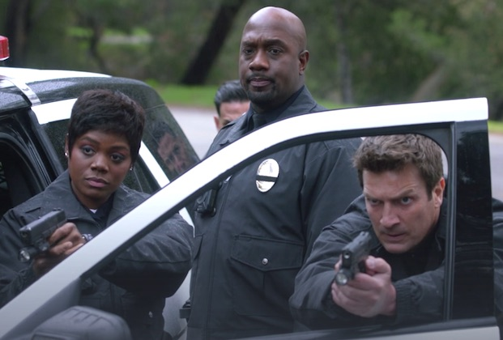
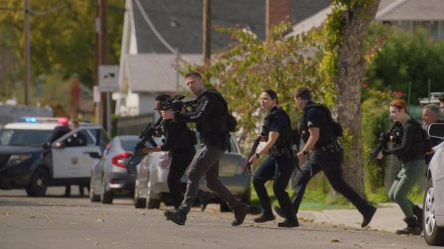
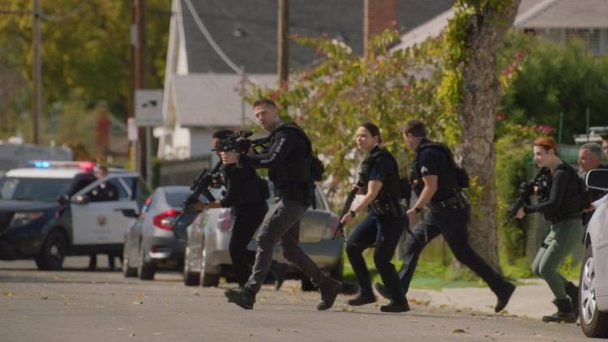
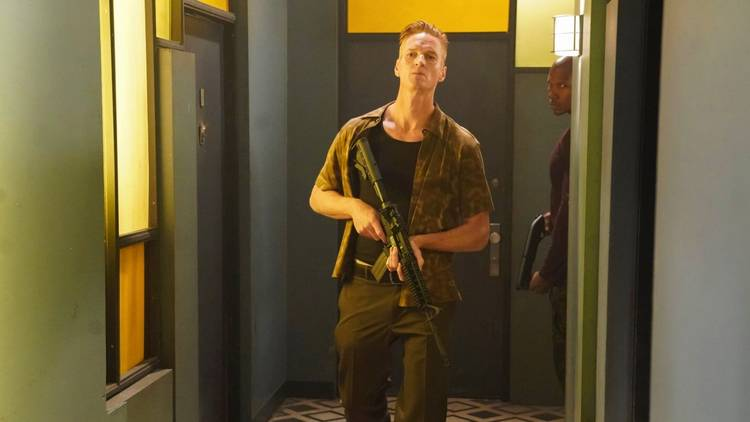
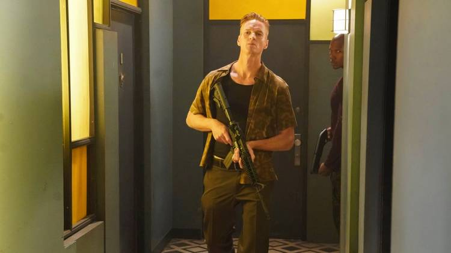
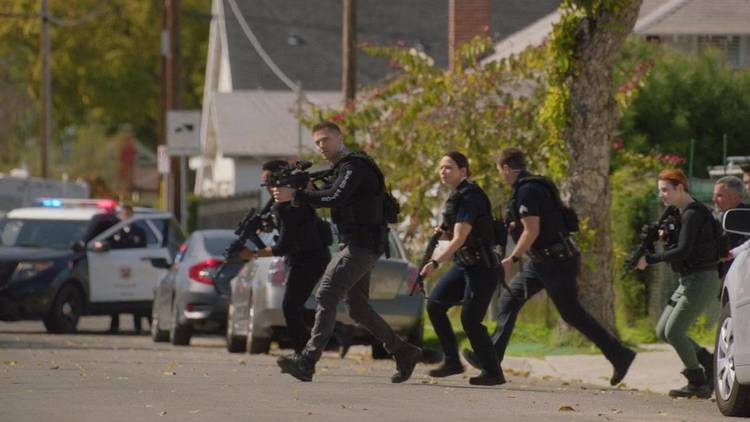
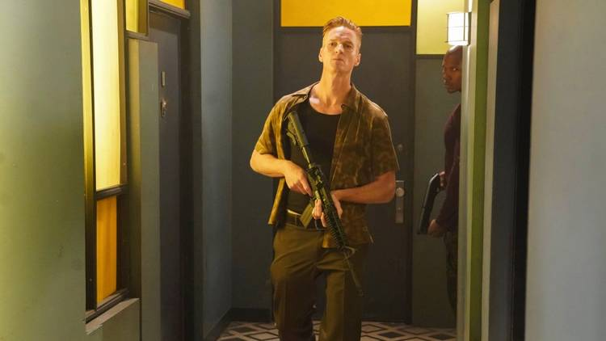

Titel en Jaartal
The Rookie (2018 - heden)
Synopsis
The Rookie volgt het verhaal van John Nolan, een man van in de veertig, die na een ingrijpende gebeurtenis besluit zijn droom om politieagent te worden waar te maken. Ondanks zijn leeftijd begint hij als de oudste "rookie" bij de LAPD, waar hij te maken krijgt met uitdagingen op zowel persoonlijk als professioneel vlak.
Poster

Personages en Cast
- John Nolan - gespeeld door Nathan Fillion: De hoofdrolspeler die op latere leeftijd zijn droom najaagt om politieagent te worden.
- Angela Lopez - gespeeld door Alyssa Diaz: Een ervaren LAPD-officier en mentor van Nolan.
- Sergeant Wade Grey - gespeeld door Richard T. Jones: De strenge maar rechtvaardige sergeant die sceptisch is over Nolan's keuze.
- Jackson West - gespeeld door Titus Makin: Een jonge en ambitieuze rookie.
- Lucy Chen - gespeeld door Melissa O'Neil: Een mede-rookie die een hechte band ontwikkelt met Nolan.
Visuele Shots

 

 



Trivia
- Nathan Fillion was eerder de hoofdrolspeler in de populaire serie Castle, waar hij een vergelijkbaar charismatisch karakter speelde.
- De serie is geïnspireerd door het waargebeurde verhaal van een 40-jarige rookie die zich aansloot bij de LAPD.
- De cast heeft verschillende prijzen gewonnen, waaronder nominaties voor de People's Choice Awards.
- Het politiewerk in de serie wordt nauwlettend geadviseerd door voormalige agenten om authenticiteit te waarborgen.
- De serie is in 2022 verlengd voor een vijfde seizoen, dankzij de grote populariteit.